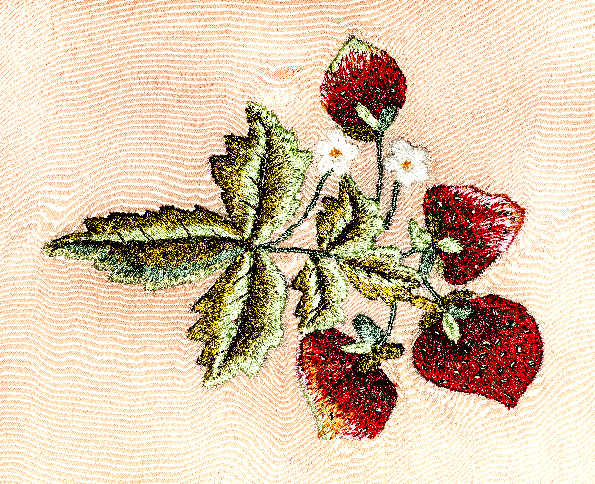

The traditional textile craft of embroidery has been used across different cultures for thousands of years. Today, it continues to evolve through personal expression with modern motifs utilizing traditional techniques.

Stitches and techniques
Get started with learning the essential embroidery techniques, from simple running stitches to complex decorative ones.
Visual inspiration
Take a look at the gallery showcasing different styles and patterns contained in contemporary embroidery projects.
Whether you are new to embroidery or revisiting traditional techniques, this space invites you to slow down and explore the beauty of handmade work.